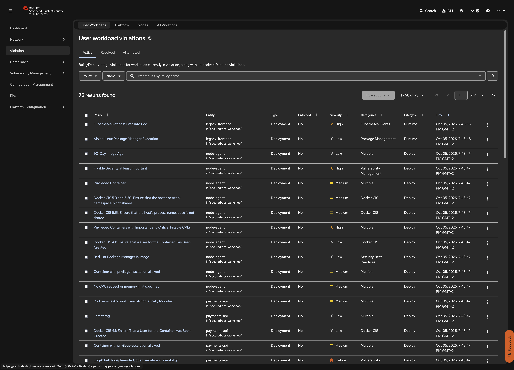

RHACS: Security Lifecycle Workshop
Findings alone do not reduce risk. This step turns the remediation plan from Step 6 into guardrails that stop new risk from entering the cluster. You define four RHACS policies as Kubernetes SecurityPolicy custom resources (policy as code). The RHACS config-controller syncs them into Central, so they can be versioned in Git and delivered with OpenShift GitOps. The policies act at two lifecycle stages:
-
Deploy stage: the RHACS admission controller rejects non-compliant creates and updates (hard enforcement). Sensor scales newly created violating deployments to zero if they get past admission (soft enforcement). Deployments that already exist are reported as violations, not scaled down; they are blocked at their next change.
-
Build stage: the same policies make
roxctl image checkfail in CI (used in Step 9).
| File | Policy | Stages | Enforcement |
|---|---|---|---|
|
Fixable CVEs of severity Important or higher (excludes |
Build, Deploy |
Fail build, scale to zero / block |
|
Log4Shell CVE-2021-44228 |
Build, Deploy |
Fail build only; deploy is inform |
|
No privileged containers |
Deploy |
Scale to zero / block |
|
Images from untrusted registries |
Build, Deploy |
Inform only |
All four are scoped to namespace acs-workshop for deploy-time evaluation, so they do not affect other workloads on the cluster.
Prerequisites
-
Step 6 completed
-
The admission controller runs with enforcement enabled (
spec.admissionControl.enforcement: Enabledin the SecuredCluster CR). Check it in Platform Configuration > Clusters > (secured cluster) > Static configuration > Admission controller enforcement behavior: Enforce policies. -
Policy as code is enabled (default: the
config-controllerpod runs instackrox) -
cluster-adminon the hub cluster, or write access tosecuritypolicies.config.stackrox.ioinstackrox
In this 2-cluster setup, SecurityPolicy CRs are applied on the hub cluster where Central runs (--context hub -n stackrox). The admission controller enforcement happens on the secured cluster where Sensor relays the policies.
|
Steps to apply
1. Remove the running workloads
What: Delete the vulnerable deployments before applying policies so you can demonstrate admission controller blocking clearly.
Why: RHACS does not scale down deployments that already exist when a policy changes (detect, don’t disrupt); it blocks them at their next change. Starting from an empty namespace shows the admission controller in action. The namespace, RBAC, Services, and Route stay in place.
oc --context secured delete deployment legacy-frontend payments-api node-agent \
-n acs-workshopVerify: No deployments running
oc --context secured get deploy -n acs-workshopNo resources found in acs-workshop namespace.2. Apply the policies
~30 seconds (CRs accepted, config-controller syncs to Central)
What: Create the four SecurityPolicy CRs on the hub cluster in the stackrox namespace.
Why: The config-controller reconciles the CRs into Central’s policy store. Sensor and the admission controller on the secured cluster receive them within about 30 seconds.
oc --context hub apply -f 07-policy-enforcement/Check that Central accepted each policy:
oc --context hub get securitypolicies -n stackrox -l workshop=acs-vuln-mgmt \
-o 'custom-columns=NAME:.metadata.name,ACCEPTED:.status.conditions[?(@.type=="AcceptedByCentral")].status,POLICY_ID:.status.policyId'Verify: All four policies are accepted
NAME ACCEPTED POLICY_ID
workshop-fixable-important-cves True xxxxxxxx-xxxx-xxxx-xxxx-xxxxxxxxxxxx
workshop-log4shell True xxxxxxxx-xxxx-xxxx-xxxx-xxxxxxxxxxxx
workshop-no-privileged True xxxxxxxx-xxxx-xxxx-xxxx-xxxxxxxxxxxx
workshop-trusted-registries True xxxxxxxx-xxxx-xxxx-xxxx-xxxxxxxxxxxxThe policies now appear under Platform Configuration > Policy Management, marked as managed externally. Edits made in the portal are overwritten by the CR - the CR is the source of truth.
3. Re-deploy the original application
~30 seconds (wait for admission controller to receive policies before applying)
What: Apply exactly the same vulnerable workload manifests as in Step 4.
Why: The admission controller evaluates each deployment against the enforced policies. Compliant workloads are admitted, non-compliant ones are rejected.
oc --context secured apply -f 04-vulnerable-workloads/
oc --context secured get deploy -n acs-workshopExpected results:
-
legacy-frontendis denied: fixable Important/Critical CVEs -
node-agentis denied: privileged container, and fixable Important CVEs -
payments-apiis admitted: it is covered by the documented exclusion (accepted risk)
The namespace, RBAC, Services, and Route are reported as unchanged. Only the vulnerable pod specs are rejected. Each rejected attempt also shows up in Violations, marked as enforced.

Verify: Only payments-api is running
NAME READY UP-TO-DATE AVAILABLE AGE
payments-api 1/1 1 1 30sThe admission controller error messages include the policy name, the violated criteria, and the break-glass annotation hint.
4. Emergency bypass (break-glass)
What: Demonstrate that enforcement can be bypassed on purpose, and every bypass is audited.
Why: In production, there are situations where a deployment must go through despite policy violations (emergency fixes, time-critical deployments). The break-glass annotation allows this while creating an auditable trail.
oc --context secured create deployment nginx-breakglass -n acs-workshop \
--image=docker.io/library/nginx:1.22.0-alpine \
--dry-run=client -o yaml \
| oc --context secured annotate --local -f - \
admission.stackrox.io/break-glass=TICKET-456 -o yaml \
| oc --context secured apply -f -The deployment is admitted and starts. Violations shows a new Emergency Deployment Annotation alert.
Remove it when you are done:
oc --context secured delete deployment nginx-breakglass -n acs-workshopVerify: Break-glass alert is visible
In Violations, filter by namespace acs-workshop. You should see an Emergency Deployment Annotation alert for nginx-breakglass.
5. Shift-left preview with roxctl
What: Run the same policies as a build-time check from the CLI.
Why: roxctl image check and roxctl deployment check let developers and CI pipelines test images against policies before deploying. This is the foundation for the full CI gate in Step 9.
roxctl -e "https://${ACS_CENTRAL_ROUTE}:443" --insecure-skip-tls-verify \
image check --image ghcr.io/christophetd/log4shell-vulnerable-app:latest --output table
echo "exit code: $?"The deployment check command evaluates a manifest as if it were deployed to a given cluster:
roxctl -e "https://${ACS_CENTRAL_ROUTE}:443" --insecure-skip-tls-verify \
deployment check --cluster $(curl -sk -H "Authorization: Bearer ${ROX_API_TOKEN}" \
"https://${ACS_CENTRAL_ROUTE}/v1/clusters" | jq -r '.clusters[0].name') \
-f 04-vulnerable-workloads/03-legacy-frontend.yaml --output tableVerify: roxctl exits with non-zero code for vulnerable images
The Log4Shell image should fail with exit code 1, listing the violated policies and their enforcement actions.
What this solves (compared to previous steps)
| Problem from previous steps | How this step solves it |
|---|---|
Vulnerability data is informational only - nothing prevents deploying known-vulnerable images |
Deploy-time admission control rejects non-compliant workloads before they run |
Policies are configured manually in the portal and drift between clusters |
SecurityPolicy CRs are versioned in Git and reconciled by config-controller |
No way to test policies before deploying to the cluster |
roxctl image check and deployment check provide a pre-deploy gate |
What this does NOT solve (yet)
| Remaining problem | Addressed in |
|---|---|
Policies block the vulnerable workloads but the fixes are not applied yet |
Step 8: Remediation applies hardened images and network controls |
The CI pipeline does not enforce policies automatically |
Step 9: CI Gate integrates roxctl into any CI/CD tool |
Alternatives considered
| Approach | Notes |
|---|---|
RHACS SecurityPolicy CRs (this step) |
Uses CVE and scan data, risk context, and build/deploy/runtime stages in one policy model. Git-native through the CRD. Scoped to what RHACS evaluates. |
RHACS policies managed only in the portal |
Fastest to try out. No Git history or review, and drift between clusters is harder to track. |
OPA Gatekeeper / Kyverno admission policies |
General-purpose Kubernetes policy engines. Good for configuration rules such as privileged pods or labels. They need an external data source to make CVE-based decisions. |
OpenShift SCC plus Pod Security Admission only |
Built into the platform and always on. Covers pod privileges but not image vulnerabilities or registries. Use it together with RHACS, not instead of it. |
Reset
This removes the workshop policies and returns the application to its end-of-step-6 state.
# 1. Break-glass test deployment (may not exist)
oc --context secured delete deployment nginx-breakglass -n acs-workshop --ignore-not-found
# 2. Remove the policies. config-controller deletes them from Central.
oc --context hub delete securitypolicies.config.stackrox.io \
-n stackrox -l workshop=acs-vuln-mgmt --ignore-not-found
# 3. Check that Central no longer has them
curl -sk -H "Authorization: Bearer ${ROX_API_TOKEN}" \
"https://${ACS_CENTRAL_ROUTE}/v1/policies" | \
jq -r '.policies[].name' | grep -c '^Workshop - '
# 4. Recreate the original vulnerable workloads
oc --context secured delete deployment legacy-frontend node-agent \
-n acs-workshop --ignore-not-found
oc --context secured apply -f 04-vulnerable-workloads/
oc --context secured get pods -n acs-workshop -wIf oc apply is still denied by policyeval.stackrox.io, the policy removal has not reached the admission controller yet. Wait 30 seconds and run the command again.